导语
腾讯云轻量云有一套用来组织 AI 开发的工作流Devflow：我只需要把需求交给它，它会先判断任务规模：改动较小，就由一个 Agent 从分析到实现直接完成；涉及范围较大，则先和我确认需求边界，再让负责方案设计、代码开发、代码审查和测试验证的不同 Agent 依次接手。
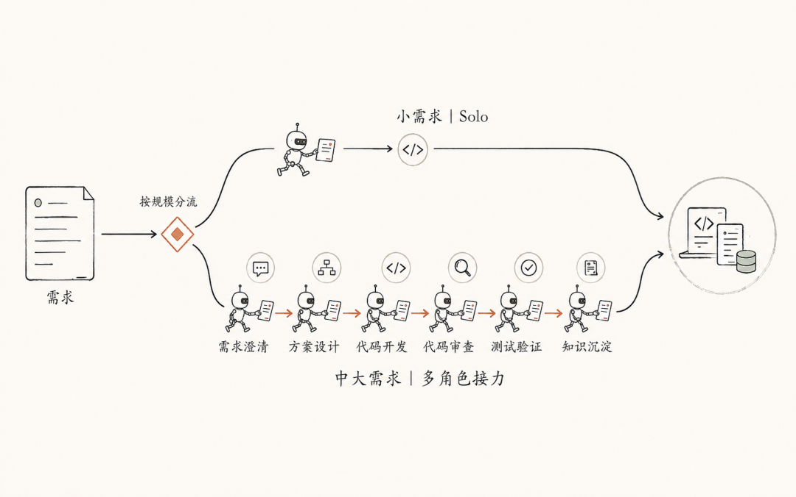
欢迎体验轻量云团队多Agent工作流——只需一句话完成完整的开发需求～
已开源：https://github.com/tencent/loopforge
我对这个工作流又做了一些自己的“优化”，然后提交一个中等需求：在skillhub平台上为每个skill详情页新增一个评论区，涉及改动十几个文件。工作流很快自动走完了整条多 Agent 流程。等开发结束回头看账单，整条流程吃掉了约 2480 万 Token，成本约 202 元，比我改进前还要多40几元。
这张账单让我停了下来。
因为我明明已经在工作流里接了两个看起来很合理的优化。
CodeGraph 像一张代码地图。给它一个函数或符号，它会沿着调用者、依赖关系和影响范围，先圈出值得看的文件。RTK 更像一个终端摘要器，它会把搜索、测试和日志压成更短的结果，避免成千上万行输出直接灌进上下文。
加入工具之后，一个减少找路，一个减少阅读。照直觉，两边都在做减法，最后的账单也该跟着变小，为什么最终的结果却不尽人意？
我一开始怀疑是某个工具的实现有问题，于是重新翻了一遍调用记录，又补跑多组实验。结果没有给出一个简单的“某工具一定省”或“一定更贵”。它指向了一个更值得追的问题：在多 Agent 工作流里，一份信息应该什么时候进来、给谁看，又该保留到什么时候？
01
要回答这个问题，我不能只盯着工具生成的那一小段输出，而要顺着信息进入工作流后的路径，继续看它怎样影响 Agent 的下一步行动，以及最后落到整条任务上究竟省了多少。因此，我对 CodeGraph 和 RTK 都按同一套问题重新检查：
局部输出：工具返回给 Agent 的内容，到底缩短了多少？
行动路径：输出变短以后，Agent 为完成任务少走了哪些步骤，又额外增加了哪些步骤？
整体结果：把任务从开始到结束的所有步骤算在一起，Token 消耗、时间和成本最终是下降还是上升？
带着这三个问题，下面先看 CodeGraph 这张“代码地图”。
02
2.1 它试图省掉什么？
CodeGraph 的价值很好理解：刚进入陌生仓库时，Agent 往往不知道入口文件、核心符号和调用关系，只能用 rg、grep、find、nl、sed 一层层搜索和打开源码。
CodeGraph 提供的是结构线索。callers 可以理解成“谁调用了这个符号”，impact 可以理解成“修改它可能影响哪些位置”。如果问题围绕一个明确符号展开，这张地图有机会直接替代一部分漫无目的的检索。
但我真正想确认的不是“图查询短不短”，而是它能不能减少整项任务的输入。
2.2 三组实验之后，边界开始清晰
我从三个角度检查 CodeGraph：先看它能不能减少新增输入，再看这种收益会不会随着任务形态改变，最后看第一轮省下来的 Token 能不能延续到后续对话。
三组实验把边界逐步拉开：真正决定结果的，是图查询能否替代后续的搜索和源码读取，以及查询结果会在会话中保留多久。
第一组：新增输入明显下降，总输入几乎没动。
我先做了一组连续 5 轮的代码理解 A/B 实验。CodeGraph 组的非缓存输入从 195,311 降到 125,926，减少了 35.5%；但总输入只从 732,783 降到 728,806，降幅约为 0.5%。
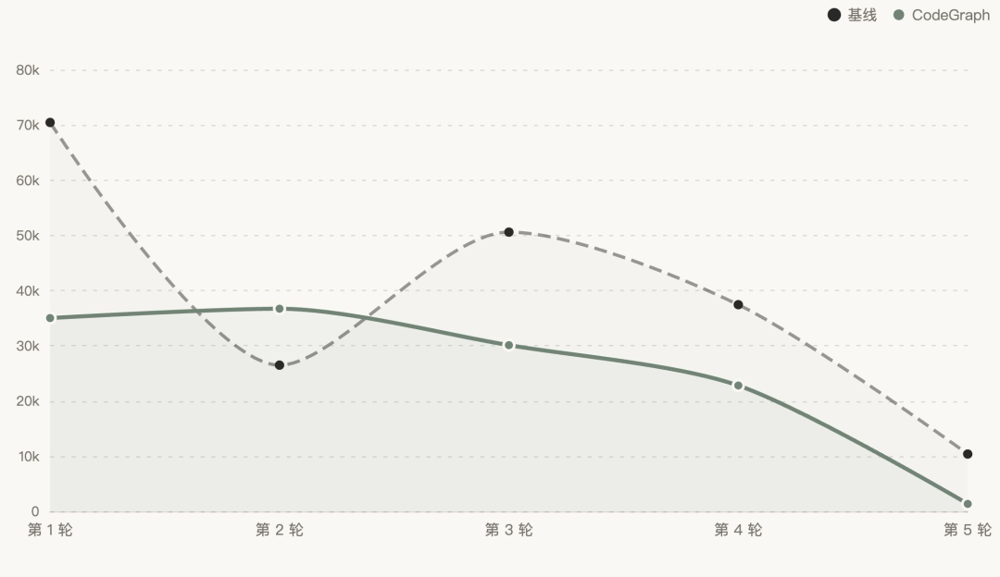
（5 轮逐轮非缓存输入：5 轮里有 4 轮更低，但第 2 轮出现反向波动。）
把这两个数字放在一起看，差异就很明显：CodeGraph 确实减少了部分新增或未命中缓存的输入，但这些收益没有等比例传递到总输入。
图谱可以先给出相关文件、符号和调用关系，但涉及某个参数的传递、某个方法的调用或具体业务判断时，Agent 仍然需要回到源码确认。实验中也出现过图谱遗漏调用关系、最终靠源码核对补全的情况。
因此，CodeGraph 减少了一部分“从哪里开始找”的成本，却没有完全替代后面的源码核对。
第二组：任务形态不同，成本方向也会完全不同。
图表 1｜CodeGraph 的成本方向由任务形态决定
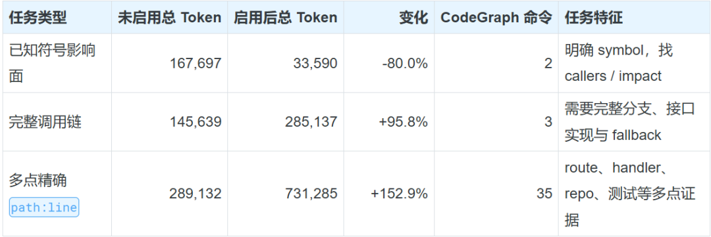
当问题围绕一个明确符号展开时，CodeGraph 的优势最明显。两条结构查询就能圈出调用者和影响范围，替代多轮文本搜索，总 Token 下降了 80.0%。
到了完整调用链任务，图查询只能帮助 Agent 找到入口。业务分支、接口实现和 fallback 语义仍要回到源码确认。原有的搜索和读取没有消失，前面又增加了图查询，总 Token 因而上升了 95.8%。
需要提供多个精确 path:line 的任务更极端。启用组执行了 35 条 CodeGraph 命令，最后仍要用普通读取确认具体行号，总 Token 反增 152.9%。
三种任务的分界线由此变得清楚：当图查询能够替代后续检索时，它更可能省；当图查询只能提供导航、后面仍要逐点核对源码时，它就可能变成一层额外成本。
第三组：第一轮省下来的 Token，不一定能延续到下一轮。
我又补了一组两轮连续对话实验。第一轮围绕已知字段 requires_api_key 查找影响面，CodeGraph 组节省了 42.5%。
第二轮已经明确要求复用上一轮结论，最多补读 3 个文件、再做 1 次图查询。即使限制了继续探索，CodeGraph 组的消耗仍达到未使用组的 3.46 倍。两轮合计后，CodeGraph 组反而贵了 31.6%。
从会话结构看，第一轮生成的图查询结果已经进入历史。它们可以被后续任务复用，也会作为上下文继续被携带。新一轮任务一旦无法充分利用这些信息，第一轮的局部收益就可能被后续输入抵消。
这组实验只有两轮，还不足以证明连续任务必然反增，但它至少说明：一次查询省下来的 Token，不会自动转化为整段会话的净收益。
2.3 实验目前能说明什么？
CodeGraph 不是简单的“开了就省”或“开了就贵”。它是否划算，至少取决于两件事：
图查询能不能真正替代后面的源码搜索与读取；
图查询结果进入窗口后，还会在后续会话里存活多久。
地图适合帮我找到那几条街。走到门口以后，它就应该收起来。
03
3.1 它试图省掉什么？
如果说 CodeGraph 的反增还可以解释成“地图不能替代源码核验”，RTK 看起来应该更直接。
RTK 会压缩 rg、测试和日志等命令的输出。终端里少几万行文字，理论上就会少一批进入模型窗口的内容。但命令输出也是 Agent 观察环境的方式：压缩器留下什么、过滤什么，可能影响它下一步搜索哪里、修改什么、是否继续测试。
因此，我对 RTK 也按同样的三层来查：局部输出是否真的变短、整项任务是否少走步骤、反增能不能在重复实验里稳定出现。
3.2 主实验确认了压缩，却没有确认端到端方向
我用 12 个真实编码任务做了 24 组 pair 对照，共 48 次运行。这里的 pair，指同一个任务分别跑一次原生命令的 Control 组和一次启用 RTK 的实验组。
RTK 组 97.91% 的可改写命令实际经过了 RTK。模型看到的终端字符从 7,917,979 降到 4,735,635，减少 40.19%。
但把终端之外的过程一起放进来，画面就变了。
图表 2｜RTK 压缩了局部输出，也改变了 Agent 的行动轨迹
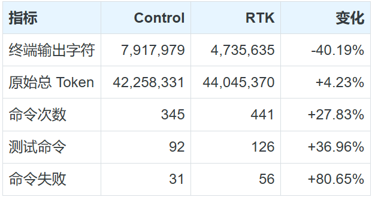
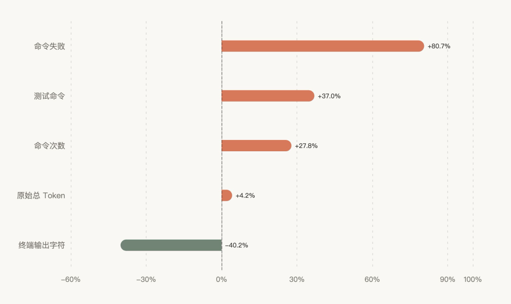
（RTK 压缩了局部输出，也改变了 Agent 的行动轨迹：局部输出下降，不代表端到端路径一定缩短。）
原始总 Token 从 42,258,331 增至 44,045,370，多了 4.23%；按任务均衡后， RTK 高 5.84%。
24 个 pair 中，13 个 RTK 更贵，11 个更省，方向几乎对半开。
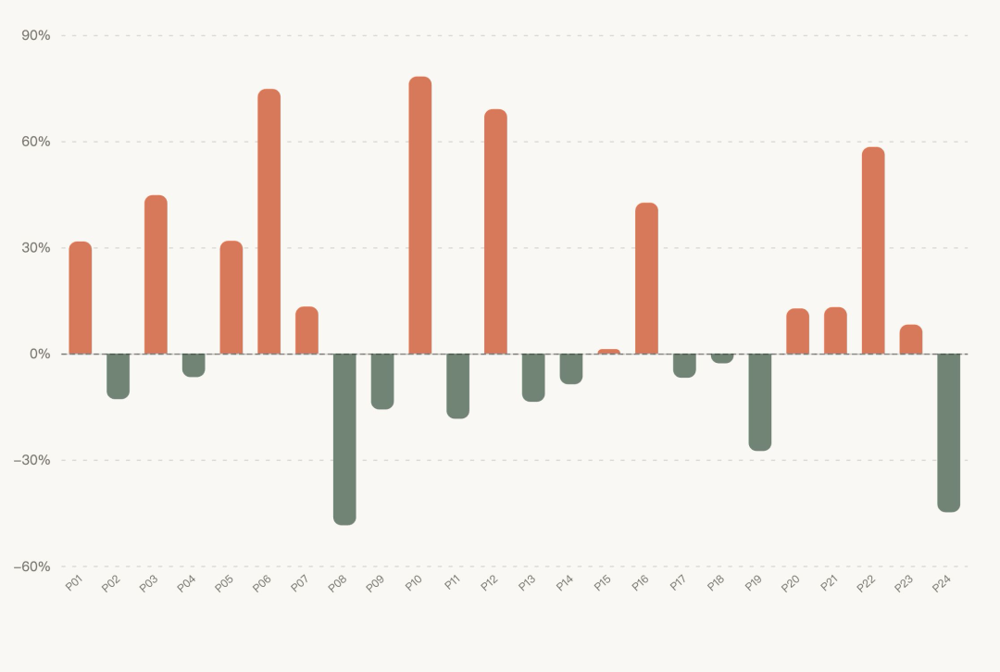
（24 个 pair 分布在零线两侧：24 个 pair 分布在零线两侧，13 个更贵、11 个更省。）
过程中的数据更值得注意。RTK 组的命令事件从 345 次增至 441 次，文件改动事件从 110 次增至 133 次，测试事件从 92 次增至 126 次，测试失败从 31 次增至 56 次。多出来的 Token 中，98% 以上来自输入侧。
终端确实短了，但部分任务走出了更长的搜索、修改和测试轨迹。
3.3 再跑十次，结论还成立吗？
看到这里，似乎容易得出一个简单的解释：RTK 压掉了关键线索，所以 Agent 绕路了。
但考虑到大模型的输出总是不确定的，在Agent链路中这种不确定性会被进一步放大，于是我需要选一个case进行重复实验：
主实验里有一个“阻止同步版本降级”的任务，两次 RTK 运行分别高出 78.27% 和 42.62%，看起来像一个相当稳定的 Bad Case。于是我固定模型、Prompt、父提交和运行参数，又做了 10 次重复实验：Control 与 RTK 各 5 次。
Control 组平均 1,889,185.6 Token，RTK 组平均 1,912,634.8 Token，RTK 高 1.24%。与此同时，RTK 把平均终端字符压低了 48.47%，但总 Token 没有同步下降；RTK 组的样本方差约为 Control 的 2.36 倍。复测没有把这个 case“稳定反增”坐实，只能说明局部输出更短，并不等于端到端成本更低。
为了确认 RTK 是否在压缩搜索结果时漏掉了有用线索，我把 5 次 RTK 运行中的第一次宽泛搜索逐一取出，并用原生 rg 执行相同查询进行对照。
对比发现，RTK 输出只保留了原始结果 15.38%～20.45% 的字符；原生 rg 中预先标记的一个关键线索相关命中原本有 158 或 178 个，经过 RTK 过滤后全部归零。
这说明，RTK 在压短输出的同时，确实可能过滤掉后续定位问题所需的线索。
所以目前我的结论分成三层：
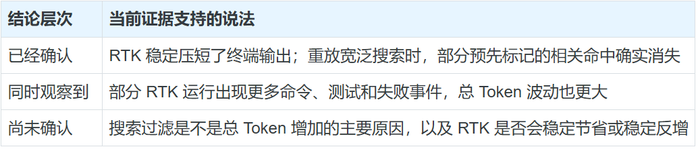
评价这类工具时，只看一次输出缩短多少是不够的。至少还要继续看整项任务多走或少走了几步，以及最后的结果有没有通过质量检查。
终端少四成，只能说明终端变短了。
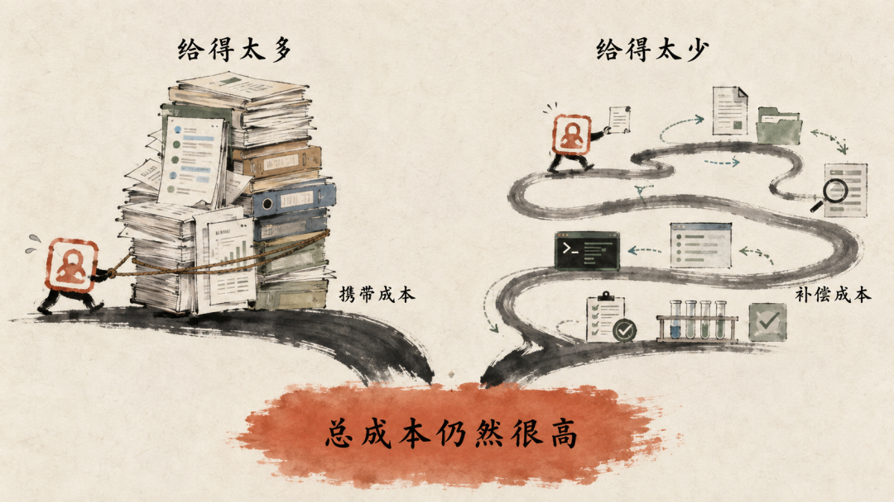
04
4.1 先把“交接纸条”和“完整材料”分开
过去的任务派发，很像在不同会话之间反复搬家。
Main 每次交接，都把需求、历史和完整报告整包交给下游；下游完成任务后，又把整份材料带回主会话。下一个角色启动时，这些内容还要再复制一遍。结果是，报告只生成了一次，却在多个长期会话中反复占用上下文。
现在，我把角色交接的上下文拆成两层：
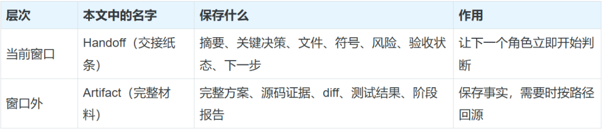
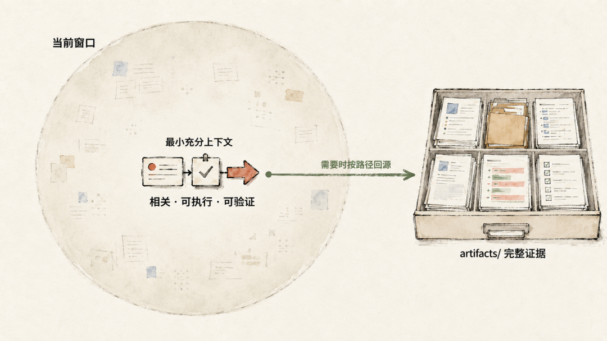
每个阶段仍然会把完整产物写进 artifacts/，只是派发消息不再内嵌整份报告，而是传 Handoff 和 Artifact 路径。
角色之间传递信息的方式也随之改变：
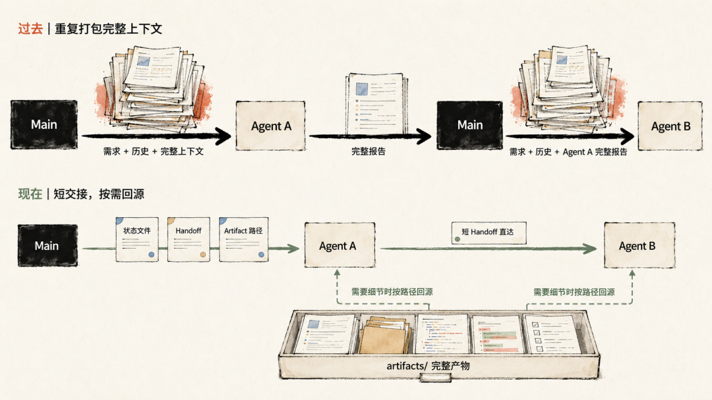
完整方案、源码证据和测试结果始终保存在 Artifact 中。角色交接时只传递当前阶段需要的摘要、决策和材料路径；需要核对细节时，再回到原始产物。这样减少的是完整报告在多个会话之间的重复传递，事实本身仍然完整保留。
4.2 让 CodeGraph 只在最需要建立结构的阶段出现
我先做的，是让同一份代码地图在后续角色之间复用，避免每个角色接手后都重新搜索一遍代码库。
需求分析阶段，如果需求已经指向某个符号、路由或文件，我会先做一次窄范围 Explore（结构探索），圈出相关文件、关键符号和调用关系，再把这份简化的代码地图写进 Handoff。Architect（方案设计）接手时先复用这些结果，遇到关键缺口再补一次查询；Developer（开发）沿着已确认的文件和符号实现需求；Code Review（代码审查）只围绕核心公共符号检查有没有遗漏调用方；Test（测试）则在相同范围内完成验证。
这样做不是为了让 CodeGraph 少跑几条命令本身，而是让一次探索服务整条工作流。地图只在前段付一次成本，后续角色复用定位结果，再针对自己的判断回到源码。
4.3 有选择地让RTK压缩，而不是成为必经之路
前面的实验让我放弃了让所有命令都先经过 RTK 的做法。RTK 能稳定压短终端输出，但在宽泛搜索中，被过滤的线索也可能让 Agent 多走几步才能找回来。
因此，我把 RTK 改成了一个按场景启用的选项。
命令运行前，一个检查 Hook 会调用 rtk rewrite：适合压缩的命令改用 RTK 版本；工作流状态命令、写操作，以及输出还要交给脚本继续解析的命令，直接保留原生形式。
这条路径随时可以退回。RTK 没有安装、不支持当前命令、拒绝处理或执行超时，原命令都会继续运行；输出出现截断、结果异常为空或预期线索没有出现时，也会立即用原生命令重新检查。Hook 同时记录哪些命令采用了 RTK、哪些被跳过、哪些发生了回退，最后再按完整任务评估实际收益。
为了让判断有明确边界，我把命令分成三档。这里的“一级”只表示当前证据下更适合优先使用。
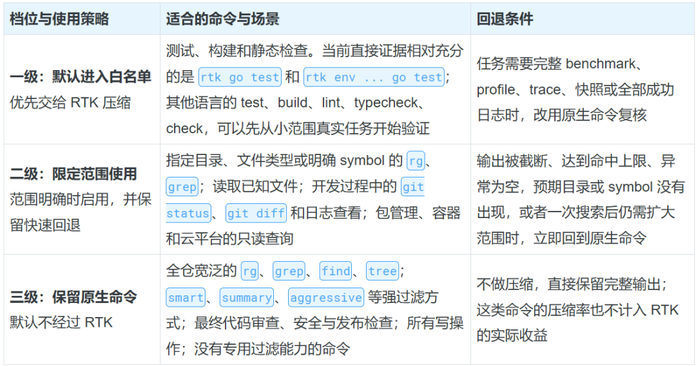
对于搜索，我还设置了一条熔断规则：第一次 RTK 搜索没有返回预期线索，立即用原生命令复核；如果随后还需要进行第二次宽泛搜索，后续搜索和文件读取全部切回原生输出。最终代码审查和验收也始终使用原生命令。
白名单可以继续扩展，但每次升级都要回到整项任务验证。只有端到端总 Token、失败诊断的保留情况、测试—修复路径和最终质量一起改善，我才会把新的命令从“限定范围使用”提升为“默认进入白名单”。
这样，RTK 只在范围明确、信息损失可控的场景里压缩噪声；任务进入探索、证据核对或最终验收时，完整输出重新接手。
4.4 让 Agent 负责判断，让程序负责搬运和路由
只把报告变成短 Handoff 还不够。如果 Main 仍然在每个阶段之间醒来，重新读取状态、理解报告、决定派发，下游省下来的内容还会在主会话里重新长回来。
因此，我把阶段开始与完成、路由校验、原子 claim、重复派发保护、计划边界检查交给 devflow_state.py （一个工作流状态管理脚本）和自动派发 Hook。
正常情况下，Architect 完成后直接唤醒 Developer，Developer 再把短交接发给 Reviewer。Main 不需要在每一站重新理解一次上下文，也不必把同一批材料重新包装。
模型把精力留给方案、实现和审查；状态迁移、去重、路由和固定格式汇总，则交给程序稳定执行。
到这里，“改 Handoff”才不再是一处孤立的模板优化。它和工具的阶段化使用、角色直达、状态机以及脚本汇总一起，组成了一条新的信息流。
05
我基于 GLM-5.2 和 Claude Opus 4.8 模型，对于同一个需求开发，分别使用第一次改进前与我改进后的工作流进行了实验。
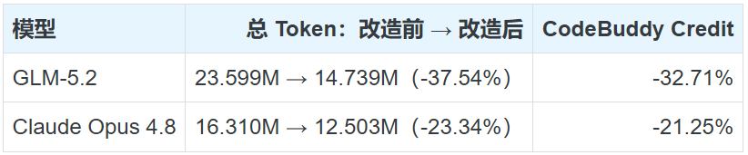
5.1 GLM：步骤几乎没变，每一步变轻了
改造前后模型步骤几乎没变，221 次变成 220 次；平均每一步携带的 Token 却从约 10.68 万降到 6.70 万。
Developer 阶段从 12.041M 降到 5.438M，一项就省下约 6.60M，占整条流程净节省的 74.5%。Design、Review 和知识沉淀也明显下降。
图表 3｜GLM 各阶段 Token 消耗变化
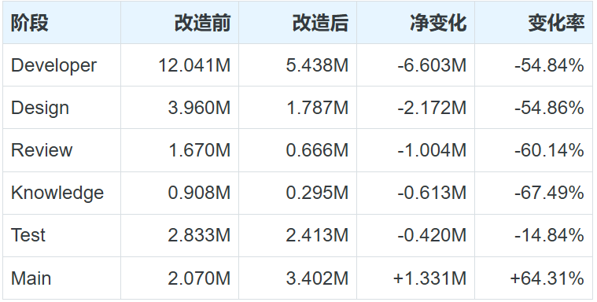
5.2 Claude组
Claude 这组总 Token 下降 23.34%，CodeBuddy Credit 下降 21.25%。它的缓存输入下降 25.23%，非缓存输入只下降 0.36%；工具调用从 258 次降到 200 次。
06
回到开头的问题：为什么两个都在做减法的工具，最后可能没有让账单变小？
因为一次输出变短，只是成本链路中的一个局部结果。它后面还连着 Agent 的行动路径、测试—修复轮次、角色之间的交接，以及内容进入会话后的存活时间。
CodeGraph 帮 Agent 决定去哪里找，RTK 决定这次看多少；Handoff、Artifact、直接派发和状态机，则决定这些信息给谁看、怎样继续流动，以及什么时候退出窗口。
现在再问我 CodeGraph 和 RTK 值不值得接，我会先问：Agent 此刻缺的是方向，还是需要看清已经选定的方向？
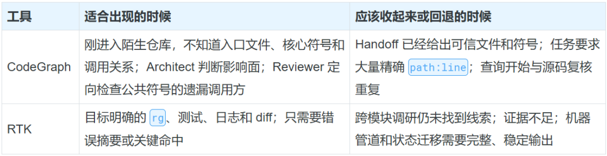
CodeGraph 帮我找到那几条街，走到门口后就可以收起来。RTK 帮我折叠沿途的噪声，看不清路标时就该展开原始输出。
我给自己留了一个很粗的公式：
上下文信息密度 = 当前步骤真正相关、可执行、可验证的信息 ÷ 进入模型窗口的全部上下文
提高这个比值，靠的不是一味删内容，而是做对三个选择：
什么时候给：只有当前决策需要时，信息才进入窗口；
给谁看：只交给此刻负责判断的 Agent，不让每个角色重复探索；
保留多久：窗口里留下摘要和索引，完整证据放进 Artifact，需要时再精确回源。
状态迁移、路由、去重和固定汇总，则交给程序处理。
以后再看一条昂贵的 Agent 工作流，我会先问三个问题：
成本最高的阶段，真的在推理，还是在重复搬运历史？
工具返回体有没有被后续请求反复携带，或者引发新的补偿性搜索？
哪些长内容可以换成“短摘要 + Artifact 路径”，哪些固定动作可以交给状态机？
上下文给多了，噪声和历史携带会持续收费；给少了，Agent 会用更多搜索、测试和修复补齐证据。
省 Token 走到最后，留下的应该是一份当下刚好够用、随时可以回源的上下文。
这就是我现在理解的“给对”。
延伸体验
把合适的能力给到 Agent，也可以从这里开始：
寻找适合的 Skill：在 SkillHub 搜索、浏览和发现面向不同场景的 AI Skills，让 Agent 更快获得当前任务需要的能力。https://www.skillhub.cn/
让自己的 Agent 快速跑起来：腾讯云轻量应用服务器支持一键部署 OpenClaw，并可通过可视化面板快速接入微信、QQ、企微、飞书等 IM。https://cloud.tencent.com/product/lighthouse?Is=sdk-topnav
感谢你读到这里，不如关注一下？👇